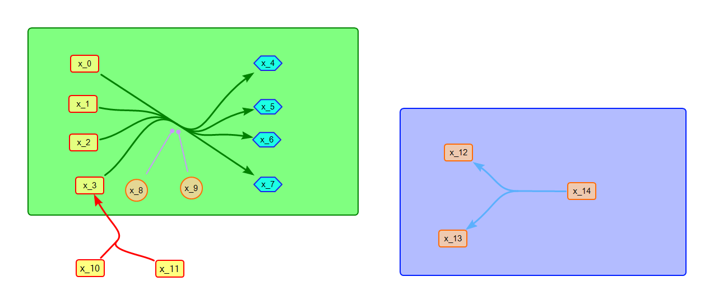

Jin Xu
Biography
I did my postdoc training from 2019 to 2024 at the University of Washington in Seattle, USA.
I did my Ph.D. study at Pohang University of Science and Technology (POSTECH) and Aisa Pacific Center for Theoretical Physics (APCTP) in Pohang, Korea.
I did my Bachelor's and Master's study at Harbin Institute of Technology in Harbin, China.
Research Interests
My research interests focus on data science, software development, and computational modeling in complex systems or networks, with applications in biomedicine.
Data science
Software development
Computational modeling
Publications (Selected)
Journal Articles:
 |
Xu, J.*, Smith, L..
Curating Models from BioModels: Developing a Workflow for Creating OMEX Files..
In: , 2024.
(Q1, Impact Factor: 2.9)
[Preprint] [Code]
|
|
|
Xu, J.*, Wiley, H. S., Sauro, H. M..
Generating Synthetic Signaling Networks for in Silico Modeling Studies.
In: Journal of Theoretical Biology, 2024.
(Q1/2, Impact Factor: 1.9)
[Paper] [Preprint] [Code]
|
|
 |
Xu, J.#, Geng, G.#, et. al..
SBcoyote: An Extensible Python-Based Reaction Editor and Viewer.
In: Biosystems, 2023.
(Q1/2, Impact Factor: 2.0) [# Equal contribution]
[Paper][Preprint] [Code]
|
 |
Xu, J.*.
SBMLKinetics: A Tool for Annotation-Independent Classification of Reaction Kinetics for SBML Models.
In: BMC Bioinformatics, 2023.
(Q1/2, Impact Factor: 2.9)
[Paper] [Code]
|
|
|
Xu, J.*, Jiang, J., Sauro, H. M..
SBMLDiagrams: A Python Package to Process and Visualize SBML Layout and Render.
In: Bioinformatics, 2023.
(Q1, Impact Factor: 4.4)
[Paper] [Code]
|
|
|
Welsh, C., Xu, J.*, et. al..
libRoadRunner 2.0: A High-Performance SBML Simulation and Analysis Library.
In: Bioinformatics, 2023.
(Q1, Impact Factor: 4.4)
[Paper] [Code]
|
 |
Xu, J.*, Jo J..
Broad Cross-reactivity of the T-cell Repertoire Achieves Specific and Sufficiently Rapid Target Searching.
In: Journal of Theoretical Biology, 2019.
(Q1/2, Impact Factor: 1.9)
[Paper] [Preprint] [Code]
|
|
|
Xu, J.*, Jo J..
Immunological Recognition by Artificial Neural Networks.
In: Journal of the Korean Physics Society, 2019.
(Q3, Impact Factor: 0.8)
[Paper] [Preprint] [Code]
|
 |
Xu, J.#, Park, D. H.#, Jo, J..
Local Complexity Predicts Global Synchronization of Hierarchically Networked Oscillators.
In: Chaos, 2017.
(Q1, Impact Factor: 2.7) [# Equal contribution]
[Paper] [Preprint]
|
 |
Park, D. H.#, Song, T.#, Hoang, D. T.#,Xu, J., Jo, J..
A Local Counter-Regulatory Motif Modulates the Global Phase of Hormonal Oscillations.
In: Scientific Reports, 2019.
(Q1, Impact Factor: 3.8) [# Equal contribution]
[Paper]
|
Services
Reviewer for BMC Bioinformatics
Reviewer for Journal of Open Source Software
Reviewer for Biosystems
Reviewer for Biochemical Society Transactions